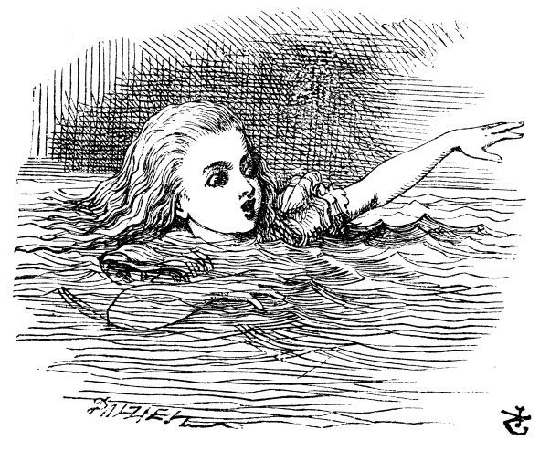

”Tuhaf, tuptuhaf,” diye bağırdı, Alice (Öyle şaşırmıştı ki, düzgün konuşmayı bile unutmuştu o anda), “şimdi de dünyanın en büyük teleskopu gibi uzu-yorum! Hoşçakalın, ayaklarım!” (aşağıya ayaklarına baktığında, nerdeyse göremiyordu onları, kendisinden öyle uzaklaşıyorlardı ki). “Ah, zavallı ayacık-larım, şimdi size kim ayakkabılarınızı ve çoraplarınızı giydirecek, canlarım benim? Benim giydiremeyeceğim kesin! Sizden o kadar uzağım ki, sizi düşünüp kendimi hiç zahmete soka-mam, başınızın çaresine bakın artık... ama, onlara karşı kibar da olmalıyım,” diye düşündü, Alice, “yoksa istediğim yere götürmezler beni! Dur, ne yapabilirim, bir bakayım. Tamam, her Noel onlara yeni bir ayakkabı alırım.”
Bunu nasıl yapabileceğini tasarlamaya koyuldu. “Ayakkabıları, bir ulak götürmeli,” diye düşündü, “insanın kendi ayaklarına armağan göndermesi amma da matrak olur! Hem adres de ne tuhaf olacak!
Alice'in Sayın sağ ayağı
Şömine önü kilimi
Şömine paravanası yanı
(Alice’ten Sevgilerle)
Aman Tanrım, ben ne saçmalıyorum, böyle!”
Tam o anda kafası salonun tavanına çarptı; şimdi artık boyu iki yetmişten uzuncaydı, minik altın anahtarı eline alır almaz doğruca bahçe kapısına koşuverdi.
Zavallı Alice! Tek yapabildiği, yan yatıp bir gözüyle bahçeye bakmak oldu; öyle ki, içeriye girebilmek her zamankinden de ümitsizdi. Oturup yine ağlamaya başladı.
“Kendinden utanmalısın,” dedi Alice, “senin gibi kocaman bir kız (bu laf da gayet yerindeydi hani) ağlar mı böyle hiç! Hey, sana söylüyorum, kes şu zırlamayı artık.” Ne var ki, sular seller gibi gözyaşı akıtarak ağlamasına devam etti, ta ki, salonun yarısına kadar yayılan on santim derinliğinde bir havuz oluşturuncaya değin.
Bir süre sonra uzaklardan pıtır pıtır ayak sesleri gelmeye başladı, ne geliyor diye alelacele gözlerini sildi. Gelen, bir elinde beyaz güderi eldivenleri, diğer elinde kocaman yelpazesiyle göz alıcı kıyafetleri içinde Beyaz Tavşan idi. Büyük bir telaş içinde koşarcasına geliyor, bir yandan da kendi kendine, “Ah, Düşes! Düşes! Eğer onu beklettiysem doğrayacak beni!” diyordu. Alice, kendini o denli çaresiz hissediyordu ki, kim olursa olsun yardım istemeye hazırdı; böylece, Tavşan ona yaklaştığı anda, kısık, ürkek bir ses tonuyla, “Lütfederseniz, efendim,” diye söze başladı. Tavşan, öyle bir irkildi ki, beyaz eldivenleri ve yelpazeyi yere düşürerek olanca hızıyla karanlığa doğru seğirtti.
Alice, yelpaze ve eldivenleri yerden aldı, salon çok sıcak olduğundan, konuşması sırasında sürekli yelpazeleniyordu: “Tanrım! Bugün her şey ne tuhaf! Daha dün her şey kendi olağan halindeydi. Acaba ben gece mi değiştim? Bi düşüneyim: Bu sabah kalktığımda ben ben miydim? Sanki biraz farklı gibiydim, ama ben aynı ben değilsem, o zaman yahu ben kimim? İşte asıl bilmece bu!” Yaşıtı bütün arkadaşlarını, “acaba onlardan birine dönüşmüş olabilir miyim?” diye gözünün önüne getirmeye başladı.
“Kesinlikle Ada olamam,” dedi, “onun saçları uzun ve lüle lüle, benimkisi hiç de öyle değil. Mabel da olamam, çünkü ben çok. çeşitli şeyler biliyorum, oysa onun bildiği şeyler o kadar az ki! Hem, o o, ben de benim. Of, Tanrım, her şey ne kadar kafa karıştırıcı! Önceden bildiklerimi şimdi biliyor muyum diye, bir sınayayım kendimi. Bi bakalım: Dört kere beş on iki, dört kere altı on üç, dört kere yedi... Of bu gidişle dünyada yirmiye kadar gelemem! Ama çarpım tablosu her şeyi göstermez ki. Coğrafyaya bir bakalım. Paris’in başkenti Londra, Roma’nın başkenti Paris ve Roma... Hayır, eminim hepsi yanlış! Kesin Mabel’a dönüştüm. ‘Küçük timsah...’ şiirini okumayı bir deneyeyim bakalım.” Sanki ders anlatıyormuş gibi ellerini kucağında kenetleyip şiiri tekrarlamaya başladı, ama sesi boğuk ve tuhaf geliyordu, sözler de önceki gibi değildi...
“Küçük timsah kıymetlendirir
Işıl ışıl kuyruğunu
Yıkatıp Nil’in suyuna
Her bir altın pulunu!
Keyifle sırıtır sanki
Güzelce açıp pençelerini,
Kibarca gülümseyen ağzı
Buyur eder küçük balıkları!”
“Yok, yok eminim, asıl sözler bunlar değil,” dedi zavallı Alice, gözleri yeniden yaşlarla dolarken konuşmasına devam etti, “doğru, kesinlikle Mabel oldum, demek ki gidip o daracık sıkıcı evde yaşamak zorunda kalacağım, elimde oynayacak hiçbir oyuncağım olmayacak ve ah! Öğrenecek bir sürü dersim olacak! Tamam, öyleyse kararımı verdim; eğer Mabel isem burada kalacağım! İnsanların yukarıdan başlarını sarkıtıp, ‘Hadi canım, yeniden yukarı gel,’ demeleri boşuna olacak. O anda sadece, ‘O halde söyleyin, ben kimim?’ diyeceğim onlara. 'Önce bunu söyleyin. O kişi olmak Hoşuma giderse, yukarı çıkarım, yok eğer gitmezse, başka biri oluncaya değin kesin burada kalacağım’” Sonra yeniden gözyaşlarına boğuldu. “Ama of Tanrım... Keşke başını aşağı sarkıtan bi-rileri olsa! Burada böyle yapayalnız kalmak canıma tak etti!”
O anda, ellerine ilişti gözleri, bir de ne görsün: Konuştuğu sırada, Tavşan’ın minik beyaz eldivenlerinden birini takmış eline. “Bunu nasıl yapabildim,” diye düşündü. “Galiba yeniden küçülü-yorum.” Boyunu ölçmek için kalkıp masanın yanına gitti; tahminine göre şu an altmış santimetre civarındaydı ve hızla kısalıyordu: Bunun nedeninin elinde tuttuğu yelpaze olduğunu o anda fark etti; tümüyle kısalıp yok olmaktan kıl payı kurtularak aceleyle elinden atıverdi yelpazeyi.
“İyi atlattım,” dedi, Alice, bu ani değişim karşısında iyiden iyiye ürkmüştü, yine de, yok olmamıştı, bundan dolayı çok mutluydu. ”Şimdi, doğruca bahçeye!” Olanca hızıyla küçük kapıya yöneldi; ama ne yazık ki, kapı yine kapalıydı ve minik altın anahtar, daha önce olduğu gibi, masanın üzerinde duruyordu. “Her şey eskisinden de beter,” diye düşündü zavallı çocuk, “hiç bu kadar kısalma-mıştı boyum, hem de hiç! Diyorum işte; her şey iyice kötüye gidiyor!”
Tam bu kelimeler ağzından döküldüğü anda, ayağı kaydı ve cumburlop diye çenesine kadar tuzlu suyun içine gömüldü. İlk aklına gelen şey, her nasılsa denize düştüğü oldu. “Öyleyse, trenle geri dönebilirim,” dedi kendi kendine. (Alice, hayatında bir kez deniz kenarına gitmişti; o zaman edindiği genel kanıya göre, İngiltere sahillerinde nereye giderseniz gidin hep şunlarla karşılaşırsınız: Denizde soyunmak için kullanılan birçok tekerlekli kabin, tahta küreklerle kum kazan çocuklar, sıra halinde dizilmiş pansiyonlar ve ardında da bir tren istasyonu.) Ama çok geçmeden anladı ki, burası, boyunun yaklaşık üç metre civarında olduğu zamanlarda ağlarken oluşturduğu gözyaşı havuzuydu.
“Keşke bu kadar ağlamasaymışım,” dedi kendi kendine, bir çıkış yolu bulmak için yüzdüğü sırada. “Galiba kendi gözyaşlarım-da boğularak cezamı çekeceğim! Kesinlikle çok tuhaf bir şey olacak bu. Hoş, bugün her şey tuhaf zaten.”

Tam o anda, biraz ötede havuzda bir şeyin çıkardığı şap şap seslerini duydu, ne olduğunu anlamak için sesin geldiği yöne doğru yüzmeye koyuldu. İlk başta bunun bir mors ya da suaygırı olduğunu düşündü, ama sonra ne kadar küçüldüğünü anımsayınca, onun da kendisi gibi ayağı kayıp suya düşen bir fare olduğunu anladı.
“Şu fare ile acaba konuşsam mı?” diye bir düşündü. “Bu aşağılarda her şey öyle olağanüstü ki, fare pekala konuşabilir bence. Her neyse, denemekte yarar var.” Bunun üzerine sözlerine başladı: ”Hey, Fare, bu gölden nasıl çıkılır, biliyor musun? Hey Fare, burada böyle durmadan yüzmekten çok yoruldum.” (Alice, bir fare ile konuşmanın doğru yolunun bu olduğunu düşünüyordu; daha önce hiç böyle bir şey yapmamıştı, ama kardeşinin Latince Dilbilgisi Kitabında ‘fare- farenin- fareye- fare- Hey Fare’ gibisinden bir şey gördüğünü anımsadı.) Fare, ona büyük bir merakla baktı; sanki minik gözlerinden birini kırpmıştı, fakat tek kelime etmedi.
“Belki dilimizi anlamıyordur,” diye aklından geçirdi Alice; “bana kalırsa, bu, Fatih William ile gelmiş bir Fransız Faresi.” (O engin tarih bilgisine karşın, Alice'in olayların ne kadar zaman önce olduğuna ilişkin net bir fikri yoktu.) Böylece, Fransızca ders kitabındaki ilk cümleyle yeniden sözlerine başladı: “Qü est ma chatte?/Ke-dim nerede?” Fare, birden, sıçrayıp sudan çıktı, korkudan tir tir titriyor gibiydi. Alice, zavallı hayvanın duygularını incittiği için,
“Aman, lütfen beni affedin,” dedi telaşla. “Kedileri sevmediğinizi bir an unuttum.”
“Kedileri sevmek mi!” diye tiz ve öfkeli bir sesle bağırdı Fare. “Sen benim yerimde olsan sever miydin onları?” “Sevmezdim herhalde,” dedi Alice usulca. “Kızmayın ama yine de keşke size bizim kedi Dinah'ı gösterebilseydim. Bir görseydiniz onu, nasıl hoş-lanırdınız kedilerden. Öyle sevimli, lıysal bir şey ki,” Alice, bir yandan havuzda uyuşuk uyuşuk yüzerken, bir yandan da neredeyse kendi kendine konuşmaya devam ediyordu. “Ateşin yanına oturarak sevimli sevimli mırmır eder, patilerini yalayıp yüzünü temizler... Öyle sevimli ve yumuşak ki, onu hep okşamak geliyor içimden... Fare yakalamada da bir numara... Aman, affedersiniz!” diye haykırdı Alice yeniden, çünkü Fare’nin tüyleri diken diken olmuştu. Alice, bu sefer Fare’nin gerçekten gücendiğini hissetmişti. “İstemezseniz ondan bir daha söz etmeyiz.”
“Biz öyle mi!” diye bağırdı başından kuyruğuna kadar vücudunun her tarafı tir tir titreyen Fare. “Sanki bu konuyu ben açmışım gibi! Bizim ailemiz kedilerden oldum olası nefret etti: iğrenç, alçak, adi şeyler. Bir daha onlardan söz etme bana.”
“Peki, tamam,” dedi Alice, konuyu bir an önce değiştirmek isteyerek “şey, peki köpekleri sever misiniz?” Fare, sorusuna cevap vermedi, Alice hararetle sözlerine devam etti: “Bizim evin orada minik şirin bir köpek var. Görmenizi isterdim! Parlak küçücük gözlü bir teriyer, uzun kıvırcık kahverengi tüyleri var! Bir şey fırlatmaya gör, hemen koşup getirir; ne zaman yemek istese, salta durup öylece yalvaran gözlerle bakar. İşte böyle, daha neleri neleri var, yarısı bile aklımda değil. Hem, biliyor musunuz, sahibi bir çiftçi; öyle faydalı bir köpekmiş ki, yüz paund edermiş! Bütün sıçanları öldürdüğünü söylüyor... Hay Allah!” diye bağırdı Alice üzüntülü bir ses tonuyla. “Galiba onu yine gücendirdim.” Zira Fare, alabildiğine hızla havuzun suyunu allak bullak ederek Alice’tert ötelere kaçıyordu.
Bunun üzerine Alice, Fare’nin ardından tatlılıkla seslendi. “Sevgili Fare, ne olur geri dönün. Hiçbirini sevmiyorsanız, ne kedilerden söz ederiz, ne de köpeklerden!” Fare, bu sözleri üzerine, geri dönüp yavaşça ona doğru yüzmeye başladı; yüzü oldukça solgundu (öfkeden, diye düşündü Alice). Sonra kısık, titrek bir sesle, ”Hadi kıyıya çıkalım, orada sana hikâyemi anlatırım,” dedi, “o zaman anlarsın, neden kedi ve köpeklerden nefret ettiğimi.” Havuzdan çıkma zamanı gelmiş geçiyordu bile, çünkü içine düşen hayvanlarla hınca hınç dolmaya başlamıştı. Düşenlerin arasında bir ördek, bir dodo, bir kırmızı papağan, bir kartal yavrusu ve daha birçok tuhaf yaratık vardı. Alice, kıyıya doğru yüzmeye başladı, bütün ekip de onun ardından yüzmeye koyuldu.